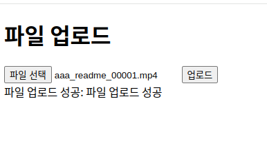
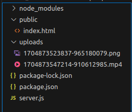

Express.js를 활용한 파일 업로드 기능 구현 및 테스트하기
Express.js를 활용한 파일 업로드 기능 구현 및 테스트하기
Express.js를 활용한 파일 업로드 기능 구현 및 테스트하기
Express.js는 Node.js의 핵심 웹 애플리케이션 프레임워크 중 하나입니다. 이 블로그 게시물에서는 Express.js를 사용하여 파일 업로드 기능을 구현하고 테스트하는 방법을 안내합니다. 먼저, 기본적인 파일 업로드 코드를 작성하고, 그 다음에 이 코드가 어떻게 작동하는지 단계별로 설명합니다.
개발 환경
- Node.js: Node.js 환경이 설치되어 있어야 합니다.
- Express.js: Express 프레임워크를 사용합니다.
- Multer: 파일 업로드를 위한 미들웨어입니다
프로젝트 구조는 아래와 같이 구성합니다. server.js는 백엔드 서버 코드이고 public 폴더의 index.html파일을 통해서 파일 업로드 프론트엔드 코드를 실행합니다.
project_folder/
│
├── public/
│ ├── index.html
│ └── (기타 클라이언트 측 파일들)
│
├── server.js
│
└── uploads/
├── file1.ext
└── file2.extExpress.js 코드 구현
파일을 전달받고 uploads폴더에 파일을 저장하는 코드를 구현합니다.
const express = require("express");
const multer = require("multer");
const path = require("path");
const app = express();
const port = 3000;
// 파일 업로드를 저장할 디렉토리와 파일명 설정
const storage = multer.diskStorage({
destination: (req, file, cb) => {
cb(null, "uploads/");
},
filename: (req, file, cb) => {
const uniqueSuffix = Date.now() + "-" + Math.round(Math.random() * 1e9);
const fileExtension = path.extname(file.originalname);
cb(null, uniqueSuffix + fileExtension);
},
});
const upload = multer({ storage: storage });
app.use(express.static("public"));
app.post("/upload", upload.single("file"), (req, res) => {
if (req.file) {
res.json({ message: "파일 업로드 성공" });
} else {
res.status(400).json({ message: "파일 업로드 실패" });
}
});
app.listen(port, () => {
console.log(`서버가 포트 ${port}에서 실행 중입니다.`);
});app.post('/upload', ...)를 사용하여 파일 업로드를 위한 라우트를 설정합니다. upload.single(‘file’) multer 미들웨어는 하나의 파일을 처리합니다. 전달 받은 파일이 존재하면 multer 생성 시 정의한 uploads폴더로 파일을 저장하고 그 외의 경우 에러를 리턴합니다.
index.html에서 전달하는 파일의 필드 이름이 file이기 때문에 upload.single()메소드에 file정보를 전달합니다. 파일저장 시 이름 중복을 막기 위해 임의의 파일명을 생성하여 저장합니다.
서버의 실행을 위해서 node server.js를 실행합니다.
index.html 코드 구현
파일을 전송하는 버튼을 구현하는 index.html을 작성합니다.
<!DOCTYPE html>
<html lang="en">
<head>
<meta charset="UTF-8">
<meta name="viewport" content="width=device-width, initial-scale=1.0">
<title>파일 업로드</title>
</head>
<body>
<h1>파일 업로드</h1>
<input type="file" id="fileInput">
<button id="uploadButton">업로드</button>
<div id="output"></div>
<script>
document.addEventListener("DOMContentLoaded", function () {
const fileInput = document.getElementById("fileInput");
const uploadButton = document.getElementById("uploadButton");
const output = document.getElementById("output");
uploadButton.addEventListener("click", function () {
const file = fileInput.files[0];
if (file) {
const formData = new FormData();
formData.append("file", file);
fetch("http://localhost:3000/upload", {
method: "POST",
body: formData,
})
.then(response => response.json())
.then(data => {
output.innerHTML = `파일 업로드 성공: ${data.message}`;
})
.catch(error => {
output.innerHTML = `파일 업로드 실패: ${error.message}`;
});
} else {
output.innerHTML = "파일을 선택해주세요.";
}
});
});
</script>
</body>
</html>파일을 업로드하는 버튼에 click 이벤트를 추가하고 파일을 전달하는 함수를 실행합니다. 데이터 전달을 위해서 FormData 인스턴스를 생성했습니다. FormData 인스턴스는 웹 애플리케이션에서 폼 데이터를 동적으로 생성하고 조작하기 위한 JavaScript 객체이며 주로 웹 폼(form)을 통해 사용자 입력을 수집하고 이 데이터를 서버로 전송할 때 유용하게 사용됩니다.
데이터는 fetch함수로 서버에 전달합니다. 로컬 컴퓨터에서 서버를 실행하고 있기 때문에 주소는 http://localhost:3000/upload를 사용합니다. fetch() 함수는 비동기적으로 HTTP 요청을 보내고 응답을 처리하기 위해 프로미스를 반환합니다. ,then()을 이용해서 서버의 응답을 처리합니다.
실행 결과
locathost:3000으로 접속해서 파일을 업로드 하면 서버 사이드로 가정된 uploads폴더에 업로드한 파일이 난수화된 파일명으로 저장되는 것을 확인할 수 있습니다.

